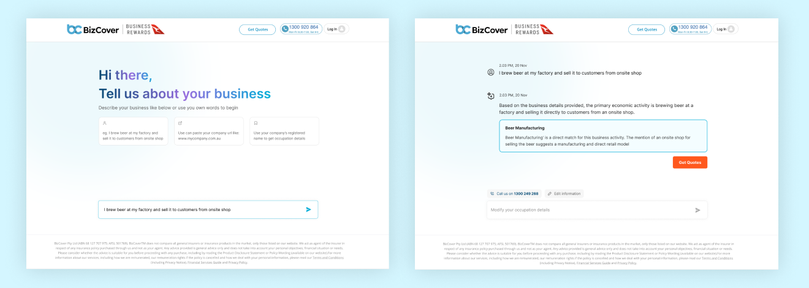
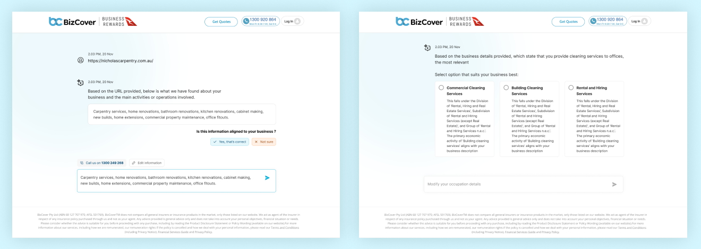
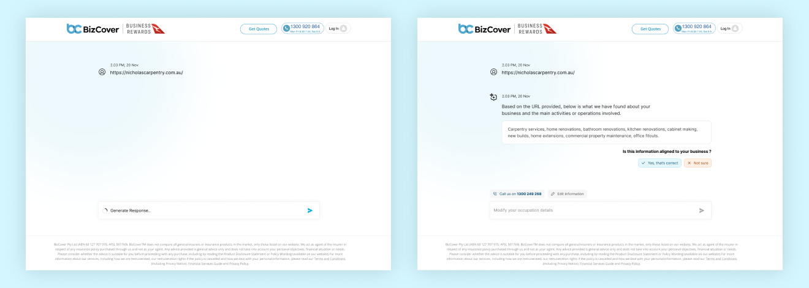

Contact
Let's work together
For new opportunities and collaborations. Feel free to reach out or just want to connect.
Enabling AI powered search for occupation
Outlining the development and implementation of an AI-powered search functionality designed to revolutionize how small business owners select their occupation when purchasing insurance. The goal is to move beyond the limitations of traditional ANZSCO code-based searches by enabling users to input diverse information like website URLs, work descriptions, or business details, which the AI will then analyze to suggest relevant and accurate occupation classifications. This aims to improve user experience, reduce misclassification errors, and ultimately streamline the insurance process.
My Role: I was part of the project as a Sr. UX designer and was responsible for UX/UI Design.
Collaboration: Business Stakeholder, Project Manager, and Dev team.
Tools: Figma, Jira, MS Teams

For small business owners seeking insurance, selecting the correct occupation is a crucial first step. Traditionally, this process relies on users navigating lengthy, predefined lists of Australian and New Zealand Standard Classification of Occupations (ANZSCO) codes. This manual approach presents several significant challenges:
We conducted agent interviews and usability testing to observe users current experience, identify frustrations, and understand their mental models when describing their work.
Key questions includeed were:
Collaborating with underwriters, customer support teams, and business analysts to understand the impact of misclassification on their workflows and identify business requirements for the new search functionality.
Examining existing search interfaces and AI-powered suggestion tools in other domains to identify best practices and potential design patterns. Assessing the current occupation selection process against established usability principles to pinpoint areas for improvement.
The ideation process for the AI-powered search focuses on creating a user-centric and efficient experience:
The success of the redesigned occupation search will be evaluated using UX-focused metrics:
Developing a clean, intuitive, and trustworthy visual design that aligns with the insurance provider's brand. This includes:



By applying a user-centered design approach, focusing on UX research, iterative prototyping, and usability testing, the AI-powered occupation search can significantly improve the small business insurance application process. The goal is to create an intuitive and trustworthy experience that empowers users to accurately identify their business occupation, leading to greater user satisfaction, reduced errors, and ultimately a more efficient and reliable insurance process for both the customer and the provider. The success of this project will be measured not only by business metrics but also by the positive impact on the user experience.
For new opportunities and collaborations. Feel free to reach out or just want to connect.